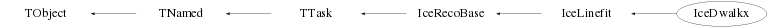

class IceDwalkx: public IceLinefit
Class IceDwalkx TTask derived class to perform direct walk track reconstruction. In case an event has been rejected by an NcEventSelector (based) processor, this task (and its sub-tasks) is not executed. Note : Amanda OMs, standard IceCube (IC), DeepCore (DC) and InIce (I) DOMs are treated seperately, which means that for events with various OMs and/or DOMs firing, several direct walk tracks may be produced. The various direct walk tracks can be distinguished on basis of their name as explained below. The procedure is based on the method described in the Amanda publication in Nuclear Instruments and Methods A524 (2004) 179-180. However, the Amanda method has been extended with the intention to take also multiple (muon) tracks within 1 event into account. This will not only provide a means to reconstruct muon bundles and multiple track events in IceCube, but will also allow to reduce the background of faked upgoing muons as a result of multiple downgoing muons hitting the top and bottom parts of the detector. A further extension of the original Amanda method is the separate treatment of the phase and group velocities as introduced in collaboration with George Japaridze (Clark Atlanta University, USA) which will provide more accurate time residuals due to the different velocities of the Cerenkov wave front (v_phase) and the actually detected photons (v_group). This distinction between v_phase and v_group can be (de)activated via the memberfunction SetVgroupUsage(). By default the distinction between v_phase and v_group is activated in the constructor of this class. To prevent waisting CPU time in trying to reconstruct (high-energy) cascade events, or to select specifically reconstruction of low multiplicity events, the user may invoke the memberfunctions SetMaxMod() and SetMinMod(). This allows selection of events for processing with a certain maximum and/or minimum number of good (D)OMs firing. By default the minimum and maximum are set to 0 and 999999, respectively, in the constructor, which implies no multiplicity selection. The maximum number of good hits per (D)OM to be used for the reconstruction can be specified via the memberfunction SetMaxHits(). By default only the first good hit of each (D)OM is used but the user may want to extend this number to the first n hits of each (D)OM to account for possible noise and/or afterpulse signals that are not recognised by the hit cleaning procedure. Note that when all the good hits of a (D)OM are used, this may lead to large processing time in case many noise and/or afterpulse signals are not recognised by the hit cleaning procedure. The SetMaxHits() facility may also be used to select a specific detector configuration (e.g. "IC" and "DC" without "I") to be used for the reconstruction. This can be achieved by suppressing processing of e.g. the "I" configuration by setting the corresponding maximum number of hits to -1. Another facility to (automatically) select reconstruction of specific detector configurations and/or save CPU time is the so-called conditional processing mode. For further details please refer to the docs of the memberfunction SetConditionalReco(). All reconstructed tracks will be stored in the IceEvent structure with as default the Classname of the producing processor as the name of the track. A suffix "A" for an Amanda (OM) track, "IC" for a standard IceCube InIce (DOM) track, "I" for a hybrid InIce (DOM) track or "DC" for a DeepCore (DOM) track will be added to the name automatically. This track name identifier can be modified by the user via the SetTrackName() memberfunction. This will allow unique identification of tracks which are produced when re-processing existing data with different criteria. Note that a suffix "A", "IC", "I" or "DC" will always be generated automatically. The track 3-momentum is set to the reconstructed direction, normalised to 1 GeV. The mass and charge of the track are left 0, since no distinction can be made between positive or negative tracks and also no mass can be determined. However, the user can define the track charge by invokation of the memberfunction SetCharge(). This facility may be used to distinguish tracks produced by the various reconstruction algorithms in a (3D) colour display (see the class NcHelix for further details). The r0 and t0 can be obtained from the reference point of the track, whereas the t0 ia also available from the track timestamp . Information about the actual parameter settings can be found in the event structure itself via the device named "IceDwalkx". The various reconstruction steps are summarised as follows : 1) Construction of track elements (TE's). A track element is a straight line connecting two hits that appeared at some minimum distance d and within some maximum time difference dt, according to eq. (20) of the NIM article. The default value for d is 75 (A), 120 (IC), 60 (I) and 50 (DC) meter, but this can be modified via the memberfunction SetDmin(). By default dt=(hit distance)/c but an additional time margin (set to 0 by default) may be specified via the memberfunction SetDtmarg(). The reference point r0 of the TE is taken as the center between the two hit positions and the TE timestamp t0 at the position r0 is taken as the IceEvent timestamp increased by the average of the two hit times. So, all timestamps contain the overall IceEvent timestamp as a basis. This means that time differences can be obtained via the NcTimestamp facilities (supporting upto picosecond precision when available). The TE direction is given by the relative position of the two hits. 2) Each TE will obtain so called associated hits. A hit is associated to a TE when it fulfills both the conditions -30 < tres < 300 ns dhit/lambda < F tres : time residual Difference between the observed hit time and the time expected for a direct photon hit. dhit : Distance traveled by the cherenkov photon from the track to the hit position lambda : Photon scattering length in ice The default values of the scattering length are 33.3 (A), 30 (IC), 33 (I) and 35 (DC) meter, but this can be modified via the memberfunction SetScatteringLength(). By default F is set to 3.07126 (A) and 3 (IC, I, DC), but this can be modified via the memberfunction SetMaxDhit(). 3) Construction of track candidates (TC's). These are TE's that fulfill both the conditions nax >= 1 qtc >= 0.8*qtcmax where we have defined : nax : Associated hits and/or strings value for the specific TE. qtc : The track quality number (see hereafter). qtcmax : Maximum quality number encountered for the TE's. Note : The selection to use the number of associated hits and/or strings for the track quality number can be performed via the memberfunction SetAsType(). The track quality number qtc is defined as follows : qtc=nax*(term1+term2)-term3-term4-term5 here we have defined : term1=2*spread/span term2=2*spreadL/spanL term3=|spread-expspread|/spread term4=|spreadL-expspreadL|/spreadL term5=|medianT|/spreadT The central observables here are the projected positions X on the track of the various associated hits w.r.t. the track reference point r0. Note that X can be negative as well as positive. Therefore we also introduce XL=|X|. span : max(X)-min(X) spanL : max(XL)-min(XL) Xmedian : median of X XmedianL : median of XL spread : < |X-Xmedian| > spreadL : < |XL-XmedianL| > expspread : expected spread in X for a flat distribution of nah hits over span expspreadL : expected spread in XL for a flat distribution of nah hits over spanL medianT : median of tres spreadT : < |tres-medianT| > However, if |Xmedian| > span/2 we set qtc=0 in order to always require projected hits to appear on both sides of r0 on the track. Note : The qtc quality number is used to define the norm of the momentum of the track candidate. As such it serves as a weight for the jet momentum (direction) after clustering of the TC's and lateron merging of the jets (see hereafter). 4) The remaining track candidates are clustered into jets when their directions are within a certain maximum opening angle. In addition a track candidate must within a certain maximum distance of the jet starting TC in order to get clustered. The latter criterion prevents clustering of (nearly) parallel track candidates crossing the detector a very different locations (e.g. muon bundles). The default maximum track opening angle is 15 degrees, but can be modified via the SetTangmax memberfunction. The default maximum track distance is 20 meters, but can be modified via the SetTdistmax memberfunction. This memberfunction also allows to specify whether the distance is determined within the detector volume or not. The average of all the r0 and t0 values of the constituent TC's of the jet will provide the r0 and t0 (i.e. reference point) of the jet. The jet total momentum consists of the vector sum of the momenta of the constituent TC's. This implies that the qtc quality numbers of the various TC's define a weight for each track in the construction of the jet direction. In addition it means that the total jet momentum represents the sum of the qtc quality numbers of the constituent TC's weighted by the opening angles between the various TC's. As such each jet is given an absolute quality number defined as : qtcjet=|jet momentum|/ntracks This jet quality number is refined on basis of the number of hits associated to the jet as : qtcjet=qtcjet+0.2*(nax-naxmax) where we have defined : nax : Associated hits and/or strings value for the specific jet. naxmax : Maximum number of associated hits (or strings) encountered for the jets. This qtcjet value is then used to order the various jets w.r.t. decreasing qtcjet quality number. Note : The qtcjet value is stored as "energy" of the jet, such that it is always available for each jet and can also be used for ordering the jets according to this value using the generic NcEvent::SortJets() facility. 5) The jets (after having been ordered w.r.t. decreasing qtcjet value) are merged when their directions are within a certain maximum opening angle. In addition a jet must within a certain maximum distance of the starting jet in order to get merged. The latter criterion prevents merging of (nearly) parallel tracks/jets crossing the detector a very different locations (e.g. muon bundles). The jet ordering before the merging process is essential, since the starting jet will "eat up" the jets that will be merged into it. The jet ordering ensures that the jet with the highest quality number will always initiate the merging process. The default maximum opening angle is half the TC maximum opening angle, but can be modified via the SetJangmax memberfunction. This memberfunction also allows to specify whether jet merging will be performed iteratively or not. In case iteration has been activated, the jet ordering is performed after each iteration step. This has to be done because since the quality numbers of the resulting merged jets have been automatically updated in the merging process. The default maximum jet distance is 30 meters, but can be modified via the SetJdistmax memberfunction. This memberfunction also allows to specify whether the distance is determined within the detector volume or not. Note : Setting the maximum jet opening angle to <=0 will prevent the merging of jets. The average of all the r0 and t0 values of the merged jets will provide the r0 and t0 (i.e. reference point) of the final jet. 6) The remaining (merged) jets are ordered w.r.t. decreasing jet quality number. As such the jet with the highest quality number will be the first one in the list, which will result in the fact that the final tracks are also ordered w.r.t. decreasing quality number, as outlined hereafter. Each remaining jet will provide the parameters (e.g. direction) for a reconstructed track. The track 3-momentum is set to the total jet 3-momentum, normalised to 1 GeV. The mass and charge of the track are left 0. The reference point data of the jet will provide the r0 and t0 (i.e. reference point) of the track. All these reconstructed tracks will be stored in the IceEvent structure using the naming conventions outlined above. Note : In case the maximum jet opening angle was specified <0, only the jet with the highest quality number will appear as a reconstructed track in the IceEvent structure. This will allow comparison with the old Amanda (Sieglinde) single track direct walk reconstruction results. For further details the user is referred to NIM A524 (2004) 169. Note : This algorithm works best on data which has been calibrated, cross talk corrected (Amanda) and cleaned from noise hits etc. (IceCleanHits). --- Author: Nick van Eijndhoven 07-oct-2005 Utrecht University - Modified: NvE $Date: 2012-07-13 16:17:43 +0200 (Fri, 13 Jul 2012) $ NCFS
Function Members (Methods)
public:
| IceDwalkx(const IceDwalkx&) | |
| IceDwalkx(const char* name = "IceDwalkx", const char* title = "Direct walk reconstruction") | |
| virtual | ~IceDwalkx() |
| virtual void | TTask::Abort()MENU |
| void | TObject::AbstractMethod(const char* method) const |
| virtual void | TTask::Add(TTask* task) |
| virtual void | TObject::AppendPad(Option_t* option = "") |
| virtual void | TTask::Browse(TBrowser* b) |
| static TClass* | Class() |
| virtual const char* | TObject::ClassName() const |
| virtual void | TTask::CleanTasks() |
| virtual void | TTask::Clear(Option_t* option = "") |
| virtual TObject* | TNamed::Clone(const char* newname = "") const |
| virtual Int_t | TNamed::Compare(const TObject* obj) const |
| virtual void | TTask::Continue()MENU |
| virtual void | TNamed::Copy(TObject& named) const |
| virtual void | TObject::Delete(Option_t* option = "")MENU |
| virtual Int_t | TObject::DistancetoPrimitive(Int_t px, Int_t py) |
| virtual void | TObject::Draw(Option_t* option = "") |
| virtual void | TObject::DrawClass() constMENU |
| virtual TObject* | TObject::DrawClone(Option_t* option = "") constMENU |
| virtual void | TObject::Dump() constMENU |
| virtual void | TObject::Error(const char* method, const char* msgfmt) const |
| virtual void | Exec(Option_t* opt) |
| virtual void | TObject::Execute(const char* method, const char* params, Int_t* error = 0) |
| virtual void | TObject::Execute(TMethod* method, TObjArray* params, Int_t* error = 0) |
| virtual void | TObject::ExecuteEvent(Int_t event, Int_t px, Int_t py) |
| virtual void | TTask::ExecuteTask(Option_t* option = "0")MENU |
| virtual void | TTask::ExecuteTasks(Option_t* option) |
| virtual void | TObject::Fatal(const char* method, const char* msgfmt) const |
| virtual void | TNamed::FillBuffer(char*& buffer) |
| virtual TObject* | TObject::FindObject(const char* name) const |
| virtual TObject* | TObject::FindObject(const TObject* obj) const |
| Int_t | TTask::GetBreakin() const |
| Int_t | TTask::GetBreakout() const |
| virtual Option_t* | TObject::GetDrawOption() const |
| static Long_t | TObject::GetDtorOnly() |
| virtual const char* | TObject::GetIconName() const |
| TList* | TTask::GetListOfTasks() const |
| virtual const char* | TNamed::GetName() const |
| virtual char* | TObject::GetObjectInfo(Int_t px, Int_t py) const |
| static Bool_t | TObject::GetObjectStat() |
| virtual Option_t* | TObject::GetOption() const |
| virtual const char* | TNamed::GetTitle() const |
| virtual UInt_t | TObject::GetUniqueID() const |
| virtual Bool_t | TObject::HandleTimer(TTimer* timer) |
| virtual ULong_t | TNamed::Hash() const |
| virtual void | TObject::Info(const char* method, const char* msgfmt) const |
| virtual Bool_t | TObject::InheritsFrom(const char* classname) const |
| virtual Bool_t | TObject::InheritsFrom(const TClass* cl) const |
| virtual void | TObject::Inspect() constMENU |
| void | TObject::InvertBit(UInt_t f) |
| virtual TClass* | IsA() const |
| Bool_t | TTask::IsActive() const |
| virtual Bool_t | TObject::IsEqual(const TObject* obj) const |
| virtual Bool_t | TTask::IsFolder() const |
| Bool_t | TObject::IsOnHeap() const |
| virtual Bool_t | TNamed::IsSortable() const |
| Bool_t | TObject::IsZombie() const |
| virtual void | TTask::ls(Option_t* option = "*") constMENU |
| void | TObject::MayNotUse(const char* method) const |
| virtual Bool_t | TObject::Notify() |
| void | TObject::Obsolete(const char* method, const char* asOfVers, const char* removedFromVers) const |
| static void | TObject::operator delete(void* ptr) |
| static void | TObject::operator delete(void* ptr, void* vp) |
| static void | TObject::operator delete[](void* ptr) |
| static void | TObject::operator delete[](void* ptr, void* vp) |
| void* | TObject::operator new(size_t sz) |
| void* | TObject::operator new(size_t sz, void* vp) |
| void* | TObject::operator new[](size_t sz) |
| void* | TObject::operator new[](size_t sz, void* vp) |
| IceDwalkx& | operator=(const IceDwalkx&) |
| virtual void | TObject::Paint(Option_t* option = "") |
| virtual void | TObject::Pop() |
| virtual void | TNamed::Print(Option_t* option = "") const |
| virtual Int_t | TObject::Read(const char* name) |
| virtual void | TObject::RecursiveRemove(TObject* obj) |
| void | TObject::ResetBit(UInt_t f) |
| virtual void | TObject::SaveAs(const char* filename = "", Option_t* option = "") constMENU |
| virtual void | TObject::SavePrimitive(ostream& out, Option_t* option = "") |
| void | IceRecoBase::SetAbsorptionLength(Float_t lambda, TString s) |
| void | TTask::SetActive(Bool_t active = kTRUE)TOGGLE |
| void | SetAsType(Int_t flag, TString s) |
| void | TObject::SetBit(UInt_t f) |
| void | TObject::SetBit(UInt_t f, Bool_t set) |
| void | TTask::SetBreakin(Int_t breakin = 1)TOGGLE |
| void | TTask::SetBreakout(Int_t breakout = 1)TOGGLE |
| void | IceRecoBase::SetCharge(Float_t charge) |
| void | IceRecoBase::SetCleaned(Int_t flag, TString s) |
| void | SetConditionalReco(Int_t flag) |
| void | SetDmin(Float_t d, TString s) |
| virtual void | TObject::SetDrawOption(Option_t* option = "")MENU |
| void | SetDtmarg(Int_t dt, TString s) |
| static void | TObject::SetDtorOnly(void* obj) |
| void | IceRecoBase::SetFlipAngles(Float_t thetatrk, Float_t thetahits) |
| void | SetJangmax(Float_t ang, TString s, Int_t iter = 1) |
| void | SetJdistmax(Float_t d, TString s, Int_t invol = 1) |
| void | SetMaxDhit(Float_t d, TString s) |
| void | IceRecoBase::SetMaxHits(Int_t nmax, TString s) |
| void | IceRecoBase::SetMaxMod(Int_t nmax, TString s) |
| void | IceRecoBase::SetMinAhits(Int_t nmin, TString s) |
| void | IceRecoBase::SetMinAmods(Int_t nmin, TString s) |
| void | IceRecoBase::SetMinMod(Int_t nmin, TString s) |
| virtual void | TNamed::SetName(const char* name)MENU |
| virtual void | TNamed::SetNameTitle(const char* name, const char* title) |
| static void | TObject::SetObjectStat(Bool_t stat) |
| void | SetScatteringLength(Float_t lambda, TString s) |
| void | IceRecoBase::SetSingleHit(Int_t ndoms, TString s, Int_t ndoms1 = 0) |
| void | IceRecoBase::SetSLChitUsage(Int_t flag, TString s) |
| void | SetTangmax(Float_t ang, TString s) |
| void | SetTdistmax(Float_t d, TString s, Int_t invol = 1) |
| void | IceRecoBase::SetTimeJitter(Float_t sigma, TString s) |
| virtual void | TNamed::SetTitle(const char* title = "")MENU |
| void | IceRecoBase::SetTrackName(TString s) |
| virtual void | TObject::SetUniqueID(UInt_t uid) |
| void | SetVgroupUsage(Int_t flag, TString s) |
| virtual void | ShowMembers(TMemberInspector&) |
| virtual Int_t | TNamed::Sizeof() const |
| virtual void | Streamer(TBuffer&) |
| void | StreamerNVirtual(TBuffer& ClassDef_StreamerNVirtual_b) |
| virtual void | TObject::SysError(const char* method, const char* msgfmt) const |
| Bool_t | TObject::TestBit(UInt_t f) const |
| Int_t | TObject::TestBits(UInt_t f) const |
| virtual void | TObject::UseCurrentStyle() |
| void | IceRecoBase::UseTracks(TString classname, Int_t n = -1) |
| virtual void | TObject::Warning(const char* method, const char* msgfmt) const |
| virtual Int_t | TObject::Write(const char* name = 0, Int_t option = 0, Int_t bufsize = 0) |
| virtual Int_t | TObject::Write(const char* name = 0, Int_t option = 0, Int_t bufsize = 0) const |
protected:
| virtual void | Amanda() |
| virtual void | AssociateHits(TObjArray& tes, TObjArray& hits, Int_t vgroup, Float_t maxdhit, Int_t astype, Float_t& qmax, Float_t lambda) |
| virtual void | ClusterTracks(TObjArray& tes, TObjArray& jets, Float_t tangmax, Int_t tinvol, Float_t tdistmax, Int_t astype, Float_t qmax) |
| virtual Int_t | DeepCore() |
| virtual void | TObject::DoError(int level, const char* location, const char* fmt, va_list va) const |
| virtual void | IceRecoBase::FlipTrack(NcTrack* t) const |
| virtual Int_t | IceCube() |
| virtual Int_t | InIce() |
| void | TObject::MakeZombie() |
| virtual void | MergeJets(TObjArray& jets, Float_t jangmax, Float_t jdistmax, Int_t jinvol, Int_t jiterate, Int_t astype) |
| NcTrack* | IceLinefit::Reconstruct(TObjArray* doms, Int_t cln, Int_t minmod, Int_t maxmod, Int_t maxhits, Int_t minahits, Int_t minamods, Int_t slc) |
| virtual void | SelectQvalue(TObjArray& tes, Int_t astype, Float_t qmax) |
| virtual void | StoreTracks(TObjArray& jets, Float_t jangmax, TString name, TString title) |
| Int_t | IceLinefit::Tracks() |
Data Members
public:
| enum TObject::EStatusBits { | kCanDelete | |
| kMustCleanup | ||
| kObjInCanvas | ||
| kIsReferenced | ||
| kHasUUID | ||
| kCannotPick | ||
| kNoContextMenu | ||
| kInvalidObject | ||
| }; | ||
| enum TObject::[unnamed] { | kIsOnHeap | |
| kNotDeleted | ||
| kZombie | ||
| kBitMask | ||
| kSingleKey | ||
| kOverwrite | ||
| kWriteDelete | ||
| }; |
protected:
| Bool_t | TTask::fActive | true if task is active |
| Int_t | fAsTypeA | Amanda flag to indicate usage of # assoc. hits or strings for quality |
| Int_t | fAsTypeDC | DeepCore flag to indicate usage of # assoc. hits or strings for quality |
| Int_t | fAsTypeI | InIce flag to indicate usage of # assoc. hits or strings for quality |
| Int_t | fAsTypeIC | Standard IceCube InIce flag to indicate usage of # assoc. hits or strings for quality |
| Int_t | TTask::fBreakin | =1 if a break point set at task extry |
| Int_t | TTask::fBreakout | =1 if a break point set at task exit |
| Float_t | IceRecoBase::fCharge | User defined charge of the produced first guess tracks |
| Int_t | IceRecoBase::fCleanA | Amanda flag to indicate usage of only cleaned hits |
| Int_t | IceRecoBase::fCleanDC | DeepCore flag to indicate usage of only cleaned hits |
| Int_t | IceRecoBase::fCleanI | InIce flag to indicate usage of only cleaned hits |
| Int_t | IceRecoBase::fCleanIC | Standard IceCube InIce flag to indicate usage of only cleaned hits |
| Int_t | fConditional | Flag to indicate conditional reconstruction of the various detector combinations |
| Float_t | fDminA | Minimum Amanda OM hit distance (in m) to form a track element |
| Float_t | fDminDC | Minimum DeepCore DOM hit distance (in m) to form a track element |
| Float_t | fDminI | Minimum InIce DOM hit distance (in m) to form a track element |
| Float_t | fDminIC | Minimum standard IceCube InIce DOM hit distance (in m) to form a track element |
| Int_t | fDtmargA | Maximum Amanda OM hit time difference margin (in ns) for track elements |
| Int_t | fDtmargDC | Maximum DeepCore DOM hit time difference margin (in ns) for track elements |
| Int_t | fDtmargI | Maximum InIce DOM hit time difference margin (in ns) for track elements |
| Int_t | fDtmargIC | Maximum standard IceCube InIce DOM hit time difference margin (in ns) for track elements |
| IceEvent* | fEvt | Pointer to the event structure |
| IceEvent* | IceRecoBase::fEvt | Pointer to the current event |
| Int_t | IceRecoBase::fFirst | Flag to denote first invokation of the processor |
| Bool_t | TTask::fHasExecuted | True if task has executed |
| Float_t | fJangmaxA | Amanda angular separation (in deg) within which jets are merged into 1 single track |
| Float_t | fJangmaxDC | DeepCore angular separation (in deg) within which jets are merged into 1 single track |
| Float_t | fJangmaxI | InIce angular separation (in deg) within which jets are merged into 1 single track |
| Float_t | fJangmaxIC | Standard IceCube InIce angular separation (in deg) within which jets are merged into 1 single track |
| Float_t | fJdistmaxA | Amanda maximum jet distance (in m) for jet merging |
| Float_t | fJdistmaxDC | DeepCore maximum jet distance (in m) for jet merging |
| Float_t | fJdistmaxI | InIce maximum jet distance (in m) for jet merging |
| Float_t | fJdistmaxIC | Standard IceCube InIce maximum jet distance (in m) for jet merging |
| Int_t | fJinvolA | Amanda flag to denote maximum jet distance testing inside/outside detector volume |
| Int_t | fJinvolDC | DeepCore flag to denote maximum jet distance testing inside/outside detector volume |
| Int_t | fJinvolI | InIce flag to denote maximum jet distance testing inside/outside detector volume |
| Int_t | fJinvolIC | Standard IceCube InIce flag to denote maximum jet distance testing inside/outside detector volume |
| Int_t | fJiterateA | Amanda flag to indicate iteration in the jet merging process |
| Int_t | fJiterateDC | DeepCore flag to indicate iteration in the jet merging process |
| Int_t | fJiterateI | InIce flag to indicate iteration in the jet merging process |
| Int_t | fJiterateIC | Standard IceCube InIce flag to indicate iteration in the jet merging process |
| Float_t | IceRecoBase::fLabsA | Average photon absorption length (in meter) for Amanda OMs |
| Float_t | IceRecoBase::fLabsDL | Average photon absorption length (in meter) for InIce DOMs in the Dust Layer |
| Float_t | IceRecoBase::fLabsLD | Average photon absorption length (in meter) for InIce DOMs in the Lower Detector below the dust layer |
| Float_t | IceRecoBase::fLabsUD | Average photon absorption length (in meter) for InIce DOMs in the Upper Detector above the dust layer |
| Float_t | fLambdaA | Average photon scattering length (in meter) for Amanda OMs |
| Float_t | IceRecoBase::fLambdaA | Average photon scattering length (in meter) for Amanda OMs |
| Float_t | fLambdaDC | Average photon scattering length (in meter) for DeepCore DOMs |
| Float_t | IceRecoBase::fLambdaDL | Average photon scattering length (in meter) for InIce DOMs in the Dust Layer |
| Float_t | fLambdaI | Average photon scattering length (in meter) for InIce DOMs |
| Float_t | fLambdaIC | Average photon scattering length (in meter) for standard IceCube InIce DOMs |
| Float_t | IceRecoBase::fLambdaLD | Average photon scattering length (in meter) for InIce DOMs in the Lower Detector below the dust layer |
| Float_t | IceRecoBase::fLambdaUD | Average photon scattering length (in meter) for InIce DOMs in the Upper Detector above the dust layer |
| Float_t | fMaxdhitA | Maximum Amanda OM hit distance (in scat. length) for hit association |
| Float_t | fMaxdhitDC | Maximum DeepCore DOM hit distance (in scat. length) for hit association |
| Float_t | fMaxdhitI | Maximum InIce DOM hit distance (in scat. length) for hit association |
| Float_t | fMaxdhitIC | Maximum standard IceCube InIce DOM hit distance (in scat. length) for hit association |
| Int_t | IceRecoBase::fMaxhitsA | The maximum number of good hits per Amanda OM to be processed |
| Int_t | IceRecoBase::fMaxhitsDC | The maximum number of good hits per DeepCore DOM to be processed |
| Int_t | IceRecoBase::fMaxhitsI | The maximum number of good hits per InIce DOM to be processed |
| Int_t | IceRecoBase::fMaxhitsIC | The maximum number of good hits per standard IceCube InIce DOM to be processed |
| Int_t | IceRecoBase::fMaxmodA | The max. number of good fired Amanda OMs for events to get processed |
| Int_t | IceRecoBase::fMaxmodDC | The max. number of good fired DeepCore DOMs for events to get processed |
| Int_t | IceRecoBase::fMaxmodI | The max. number of good fired InIce DOMs for events to get processed |
| Int_t | IceRecoBase::fMaxmodIC | The max. number of good fired standard IceCube InIce DOMs for events to get processed |
| Int_t | IceRecoBase::fMinahitsA | The minimum number of associated hits to produce an Amanda reconstructed track |
| Int_t | IceRecoBase::fMinahitsDC | The minimum number of associated hits to produce a DeepCore (DC) reconstructed track |
| Int_t | IceRecoBase::fMinahitsI | The minimum number of associated hits to produce a hybrid InIce (I) reconstructed track |
| Int_t | IceRecoBase::fMinahitsIC | The minimum number of associated hits to produce a standard IceCube (IC) reconstructed track |
| Int_t | IceRecoBase::fMinamodsA | The minimum number of associated OMs to produce an Amanda reconstructed track |
| Int_t | IceRecoBase::fMinamodsDC | The minimum number of associated DOMs to produce a DeepCore (DC) reconstructed track |
| Int_t | IceRecoBase::fMinamodsI | The minimum number of associated DOMs to produce a hybrid InIce (I) reconstructed track |
| Int_t | IceRecoBase::fMinamodsIC | The minimum number of associated DOMs to produce a standard IceCube (IC) reconstructed track |
| Int_t | IceRecoBase::fMinmodA | The min. number of good fired Amanda OMs for events to get processed |
| Int_t | IceRecoBase::fMinmodDC | The min. number of good fired DeepCore DOMs for events to get processed |
| Int_t | IceRecoBase::fMinmodI | The min. number of good fired InIce DOMs for events to get processed |
| Int_t | IceRecoBase::fMinmodIC | The min. number of good fired standard IceCube InIce DOMs for events to get processed |
| TString | TNamed::fName | object identifier |
| TString | TTask::fOption | Option specified in ExecuteTask |
| NcDevice | IceRecoBase::fParams | Device to store the parameters for this processor |
| Int_t | IceRecoBase::fSingle1A | Minimum number of good firing Amanda OMs on a single string at which only first hits will be used |
| Int_t | IceRecoBase::fSingle1DC | Minimum number of good firing DeepCore DOMs on a single string at which only first hits will be used |
| Int_t | IceRecoBase::fSingle1I | Minimum number of good firing InIce DOMs on a single string at which only first hits will be used |
| Int_t | IceRecoBase::fSingle1IC | Minimum number of good firing standard IceCube InIce DOMs on a single string at which only first hits will be used |
| Int_t | IceRecoBase::fSingleA | Minimum number of good firing Amanda OMs at which only first hits will be used |
| Int_t | IceRecoBase::fSingleDC | Minimum number of good firing DeepCore DOMs at which only first hits will be used |
| Int_t | IceRecoBase::fSingleI | Minimum number of good firing InIce DOMs at which only first hits will be used |
| Int_t | IceRecoBase::fSingleIC | Minimum number of good firing standard IceCube InIce DOMs at which only first hits will be used |
| Int_t | IceRecoBase::fSlcDC | DeepCore flag to indicate usage of SLC hits |
| Int_t | IceRecoBase::fSlcI | InIce flag to indicate usage of SLC hits |
| Int_t | IceRecoBase::fSlcIC | Standard IceCube InIce flag to indicate usage of SLC hits |
| Float_t | fTangmaxA | Amanda angular separation (in deg) within which track candidates are clustered in a jet |
| Float_t | fTangmaxDC | DeepCore angular separation (in deg) within which track candidates are clustered in a jet |
| Float_t | fTangmaxI | InIce angular separation (in deg) within which track candidates are clustered in a jet |
| Float_t | fTangmaxIC | Standard IceCube InIce angular separation (in deg) within which track candidates are clustered in a jet |
| TList* | TTask::fTasks | List of Tasks |
| Float_t | fTdistmaxA | Maximum Amanda track distance (in m) for track candidate clustering |
| Float_t | fTdistmaxDC | Maximum DeepCore track distance (in m) for track candidate clustering |
| Float_t | fTdistmaxI | Maximum InIce track distance (in m) for track candidate clustering |
| Float_t | fTdistmaxIC | Maximum standard IceCube InIce track distance (in m) for track candidate clustering |
| Float_t | IceRecoBase::fThetahits | Hit path polar angle threshold (in degrees) for track direction flipping |
| Float_t | IceRecoBase::fThetatrk | Track polar angle threshold (in degrees) for track direction flipping |
| Int_t | fTinvolA | Amanda flag to denote maximum track distance testing inside/outside detector volume |
| Int_t | fTinvolDC | DeepCore flag to denote maximum track distance testing inside/outside detector volume |
| Int_t | fTinvolI | InIce flag to denote maximum track distance testing inside/outside detector volume |
| Int_t | fTinvolIC | Standard IceCube InIce flag to denote maximum track distance testing inside/outside detector volume |
| TString | TNamed::fTitle | object title |
| TString | IceRecoBase::fTrackname | The name identifier for the produced first guess tracks |
| Float_t | IceRecoBase::fTsigmaA | PMT jitter (in ns) for Amanda OMs |
| Float_t | IceRecoBase::fTsigmaDC | PMT jitter (in ns) for DeepCore DOMs |
| Float_t | IceRecoBase::fTsigmaIC | PMT jitter (in ns) for standard IceCube DOMs |
| TObjArray* | IceRecoBase::fUseNames | The first guess classnames to be used |
| TArrayI* | IceRecoBase::fUseNtk | The max. numbers of the various first guess tracks to be used |
| Int_t | fVgroupA | Amanda flag to indicate usage of distinct phase and group velocities |
| Int_t | IceRecoBase::fVgroupA | Amanda flag to indicate usage of distinct phase and group velocities |
| Int_t | fVgroupDC | DeepCore flag to indicate usage of distinct phase and group velocities |
| Int_t | IceRecoBase::fVgroupDC | DeepCore flag to indicate usage of distinct phase and group velocities |
| Int_t | fVgroupI | InIce flag to indicate usage of distinct phase and group velocities |
| Int_t | IceRecoBase::fVgroupI | InIce flag to indicate usage of distinct phase and group velocities |
| Int_t | fVgroupIC | Standard IceCube InIce flag to indicate usage of distinct phase and group velocities |
| Int_t | IceRecoBase::fVgroupIC | Standard IceCube InIce flag to indicate usage of distinct phase and group velocities |
| static TTask* | TTask::fgBeginTask | pointer to task initiator |
| static TTask* | TTask::fgBreakPoint | pointer to current break point |
Class Charts
{kind=link}
{kind=link}
{kind=link}
{kind=link}

Function documentation
IceDwalkx(const char* name = "IceDwalkx", const char* title = "Direct walk reconstruction")
Default constructor. The various reconstruction parameters are initialised to the values as mentioned in the general documentation of this class. The angular separation parameter for jet merging is initialised as half the value of the angular separation parameter for track candidate clustering.
void SetDtmarg(Int_t dt, TString s)
Set maximum hit time difference margin (in ns) for track elements. For default values please refer to the general documentation of this class. The input argument "s" allows for detector specification. s = "A" --> Amanda OMs "I" --> InIce DOMs "IC" --> Standard IceCube InIce DOMs "DC" --> DeepCore DOMs
void SetMaxDhit(Float_t d, TString s)
Set maximum distance (in scattering length) for a hit to get associated. For default values please refer to the general documentation of this class. The input argument "s" allows for detector specification. s = "A" --> Amanda OMs "I" --> InIce DOMs "IC" --> Standard IceCube InIce DOMs "DC" --> DeepCore DOMs
void SetTangmax(Float_t ang, TString s)
Set maximum angular separation (in deg) for track candidate clustering into jets. In the constructor the default has been set to 15 deg, in accordance to NIM A524 (2004) 180. The input argument "s" allows for detector specification. s = "A" --> Amanda OMs "I" --> InIce DOMs "IC" --> Standard IceCube InIce DOMs "DC" --> DeepCore DOMs Note : This function also sets automatically the value of the maximum angular separation for jet merging into 1 single track to ang/2. In order to specify a different max. jet merging separation angle, one has to invoke the memberfunction SetJangmax afterwards.
void SetTdistmax(Float_t d, TString s, Int_t invol = 1)
Set maximum distance (in m) of the two track candidates in the track clustering process. The input argument "s" allows for detector specification. s = "A" --> Amanda OMs "I" --> InIce DOMs "IC" --> Standard IceCube InIce DOMs "DC" --> DeepCore DOMs The distance between the two tracks can be determined restricted to the detector volume (invol=1) or in the overall space (invol=0). The former will prevent clustering of (nearly) parallel tracks which cross the detector volume at very different locations, whereas the latter will enable clustering of tracks with a common location of origin (e.g. muon bundles from an air shower) even if they cross the detector volume at very different locations. At invokation of this memberfunction the default is invol=1. In the constructor the default has been set to 20 meter with invol=1.
void SetJangmax(Float_t ang, TString s, Int_t iter = 1)
Set angular separation (in deg) within which jets are merged into 1 single track. The input argument "s" allows for detector specification. s = "A" --> Amanda OMs "I" --> InIce DOMs "IC" --> Standard IceCube InIce DOMs "DC" --> DeepCore DOMs The merging process is a dynamic procedure and can be carried out by iteration (iter=1) until no further merging of the various jets occurs anymore. However, by specification of iter=0 the user can also select to go only once through all the jet combinations to check for mergers. For large events the latter will in general result in more track candidates. At invokation of this memberfunction the default is iter=1. In the constructor the default angle has been set 7.5 deg, being half of the value of the default track candidate clustering separation angle. The iteration flag was set to 1 in the constructor. Notes : 1) Setting ang=0 will prevent jet merging. Consequently, every jet will appear as a separate track in the reconstruction result. 2) Setting ang<0 will prevent jet merging. In addition, only the jet with the maximum number of tracks will appear as a track in the reconstruction result. This situation resembles the standard Sieglinde direct walk processing and as such can be used to perform comparison studies.
void SetJdistmax(Float_t d, TString s, Int_t invol = 1)
Set maximum distance (in m) of the two jets in the jet merging process. The input argument "s" allows for detector specification. s = "A" --> Amanda OMs "I" --> InIce DOMs "IC" --> Standard IceCube InIce DOMs "DC" --> DeepCore DOMs The distance between the two jets can be determined restricted to the detector volume (invol=1) or in the overall space (invol=0). The former will prevent clustering of (nearly) parallel tracks which cross the detector volume at very different locations, whereas the latter will enable clustering of tracks with a common location of origin (e.g. muon bundles from an air shower) even if they cross the detector volume at very different locations. At invokation of this memberfunction the default is invol=1. In the constructor the default has been set to 30 meter with invol=1.
void SetVgroupUsage(Int_t flag, TString s)
(De)activate the distinction between v_phase and v_group of the Cherenkov light.
flag = 0 : No distinction between v_phase and v_group
= 1 : Separate treatment of v_phase and v_group
The input argument "s" allows for detector specification.
s = "A" --> Amanda OMs
"I" --> InIce DOMs
"IC" --> Standard IceCube InIce DOMs
"DC" --> DeepCore DOMs
By default the distinction between v_phase and v_group is activated
in the constructor of this class.
void SetAsType(Int_t flag, TString s)
Select number of associated hits and/or strings as quality indicator.
flag = 1 : Number of associated hits (nah) is used as quality indicator
= 2 : Number of associated strings (nas) is used as quality indicator
= 3 : nah*nas is used as quality indicator
The input argument "s" allows for detector specification.
s = "A" --> Amanda OMs
"I" --> InIce DOMs
"IC" --> Standard IceCube InIce DOMs
"DC" --> DeepCore DOMs
By default the flag value is set to 3 in the constructor of this class.
void SetScatteringLength(Float_t lambda, TString s)
void SetConditionalReco(Int_t flag)
Set flag for conditional reconstruction of the various detector combinations.
This will allow to save considerably on cpu time, especially on large events.
flag : 0 ==> Always invoke all the various reconstructions
1 ==> No "I" reconstruction in case "IC" track was found
2 ==> Same as flag=1 but also no "DC" reconstruction in case "IC" or "I" track was found
By default flag=1 is set in the constructor.
Notes :
1) Reconstruction in a specific detector can always be de-activated by
invokation of the SetMaxHits memberfunction.
2) In case of inconsistent input the current setting will not be modified.
Int_t InIce()
The direct walk track reconstruction for all InIce DOM signals. The procedure here is optimised to provide at least one direct walk track in most of the events (i.e. opt for somewhat lower energy threshold) at the expense of having a pointing accuracy slightly worse than average. The return argument indicates whether or not a track has been found
Int_t IceCube()
The direct walk track reconstruction for the standard IceCube InIce DOM signals. The procedure here is optimised to provide a direct walk track with better than average pointing accuracy (i.e. slightly higher energy threshold) on the expense of sometimes not making a reco track at all. The return argument indicates whether or not a track has been found
Int_t DeepCore()
The direct walk track reconstruction for the DeepCore DOM signals. The procedure here is optimised to provide a direct walk track with the lowest possible energy threshold at the expense of having a worse than average pointing accuracy at these low energies. The return argument indicates whether or not a track has been found
void AssociateHits(TObjArray& tes, TObjArray& hits, Int_t vgroup, Float_t maxdhit, Int_t astype, Float_t& qmax, Float_t lambda)
Association of hits to the various track elements.
void SelectQvalue(TObjArray& tes, Int_t astype, Float_t qmax)
Perform selection on Q value in case of multiple track candidates
void ClusterTracks(TObjArray& tes, TObjArray& jets, Float_t tangmax, Int_t tinvol, Float_t tdistmax, Int_t astype, Float_t qmax)
Cluster track candidates within a certain opening angle into jets. Also the track should be within a certain maximum distance of the starting track in order to get clustered. The latter prevents clustering of (nearly) parallel track candidates crossing the detector a very different locations (e.g. muon bundles). The average r0 and t0 of the constituent tracks will be taken as the jet reference point.
void MergeJets(TObjArray& jets, Float_t jangmax, Float_t jdistmax, Int_t jinvol, Int_t jiterate, Int_t astype)
Merge jets within a certain opening to provide the final track(s). Also the jet should be within a certain maximum distance of the starting jet in order to get merged. The latter prevents merging of (nearly) parallel jets/tracks crossing the detector a very different locations (e.g. muon bundles). The average r0 and t0 of the constituent jets will be taken as the final reference point.
void StoreTracks(TObjArray& jets, Float_t jangmax, TString name, TString title)
Store every jet as a reconstructed track in the event structure. The jet 3-momentum (normalised to 1) and reference point (i.e.the average r0 and t0 of the constituent tracks) will make up the final track parameters. All the associated hits of all the constituent tracks of the jet will be associated to the final track. In case the jet angular separation was set <0, only the jet with the maximum number of tracks (i.e. the first one in the array) will be used to form a track. This will allow comparison with the standard Sieglinde processing.
IceDwalkx(const char* name = "IceDwalkx", const char* title = "Direct walk reconstruction")